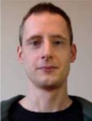

| Home | Publications | Software | Personal | CV |
|  | Wojciech (Wojtek) Wideł
I am a postdoctoral researcher, working on security modeling at KTH Royal Institute of Technology (Stockholm, Sweden), within the Division of Network and System Engineering. Previously, I was a doctoral student in computer science within the EMSEC team at IRISA (Rennes, France). I was working on formal foundations of a graphical model for security called attack–defense trees, under the supervision of Barbara Kordy. I should obtain a Ph.D. in computer science in December 2019. In May 2017 I obtained a Ph.D. in mathematics, from AGH UST in Kraków, Poland, where I worked with A. Paweł Wojda. e-mail: widel [at] kth [dot] se |